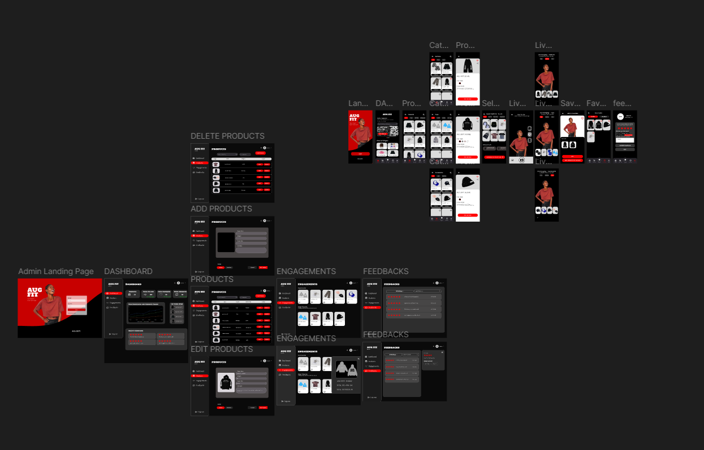

Web Development
Responsive websites and practical web applications built around user needs.
BUILT WITH LOGIC. DRIVEN BY CREATIVITY.
I'm a developer driven by creativity, curiosity, and the challenge of turning ideas into reality. I build digital experiences that blend functionality with thoughtful design, from web applications and software systems to interactive games. Every project is a chance to solve problems, learn something new, and bring ideas to life.
I'm Hexyl Athan N. Roblon, an aspiring developer interested in web development, software development, interface design, and game development.
I enjoy exploring how design and technology work together to solve real problems. My projects help me develop my technical skills, learn new tools, and create experiences that are clear and easy to use.
I'm always open to learning, collaborating, and taking on new challenges.
Responsive websites and practical web applications built around user needs.
Organized systems for managing information, workflows, and business tasks.
Clean layouts and thoughtful interactions that make digital products easier to use.
Interactive 2D gameplay, mechanics, animations, and level design with Unity.
Tools and technologies I use or explore while developing projects.
A selection of academic and personal projects exploring software, design, and interactive experiences.

A web-based inventory and sales management system concept with role-based access, dashboard analytics, and tools for managing products and stock.

A 2D platformer concept where a knight explores dungeon levels, fights enemies, avoids traps, and progresses through a rescue adventure.
A web-based medical appointment management system designed to help patients schedule appointments and help clinic staff manage bookings, patient information, and appointment schedules.

A web-based inventory and sales management system concept with role-based access, dashboard analytics, and tools for managing products and stock.

Interface concepts and prototypes focused on clear navigation, consistent visual design, and straightforward user flows.
I'm open to discussing ideas, collaborations, and opportunities to learn and build something useful together.
Send Me an Email